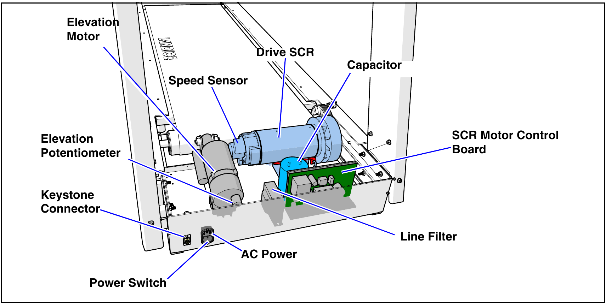
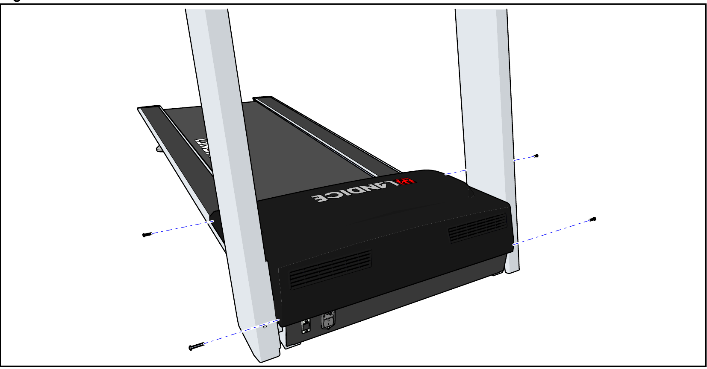
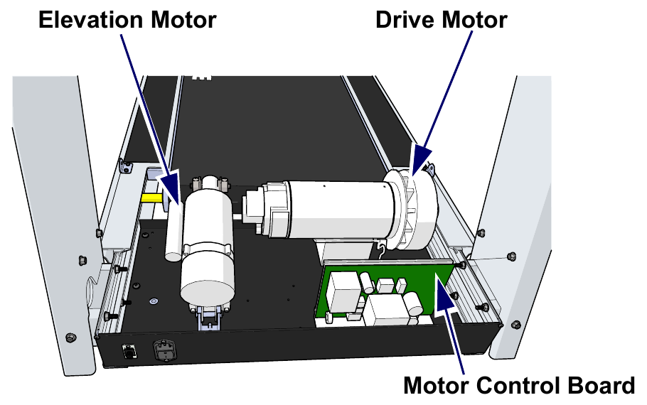
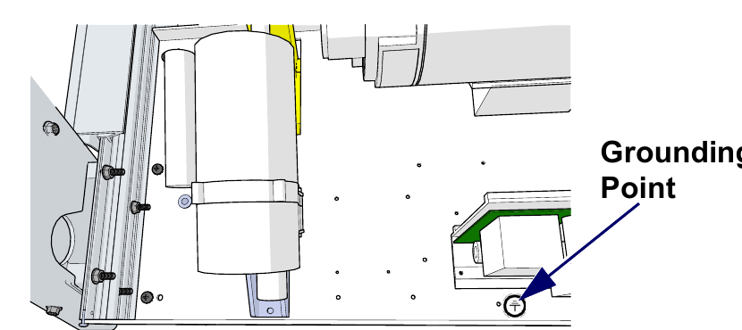
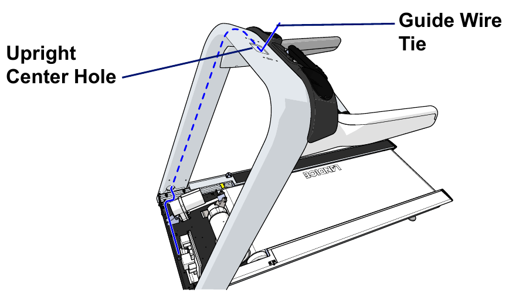
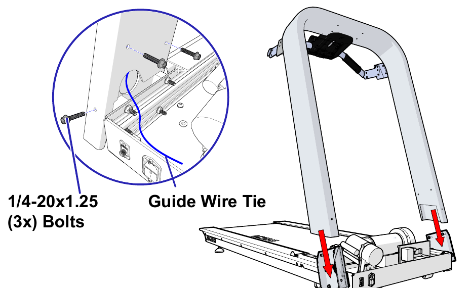

Moving the Landice L8: take it apart, carry it out
Only the disassembly you need to get it up the basement stairs, through the house and into a truck. You split the treadmill into two pieces: the upper assembly (upright, handrails, tray and console, all still bolted together) and the base. That takes 6 bolts and 2 wire connectors. Tap each step's checkbox as you go; it remembers where you are.
Tools you'll need
- Socket wrench (ratchet) with a 3/8″ socket for the 6 upright bolts, per the manual. Bring a 7/16″ too and test-fit before the day; a box-end or adjustable wrench also works. Avoid an open-end wrench on tight bolts (it rounds them).
- Screwdriver for the 4 motor cover screws.
- 2 lifting straps (forearm or shoulder kind), 2–3 moving blankets and work gloves.
- Ratchet straps or rope to tie it down in the truck.
- Phone for photos, flashlight, 3 zip-top bags, masking tape and a marker.
- 3 people for the stairs (2 can handle level floors).
Manuals (PDF): Owner's manual, pages 28 and 36–37 · Service manual, pages 18 and 73
1Gather tools and people
Get everything on the tools list at the top, and line up your helpers: 2 people can carry the base on level floors with straps, and a third person helps on the stairs.
2Lower it flat and unplug it
- Turn the treadmill on and bring the incline all the way down to 0%. The base carries much better flat, and you can't lower it once it's unplugged.
- Press STOP twice, pull out the safety lanyard key and put it in a bag.
- Turn off the power switch, unplug the cord from the wall, then unplug it from the socket on the front of the treadmill (labeled AC Power below). Coil the cord and bag it.

3Take off the motor cover
Four screws hold it, two on each side. Remove them, lift the cover straight up and set it somewhere it won't get stepped on. Put the screws in a bag marked “motor cover”.

4Unplug the upper harness and ground wire
One cable bundle, the upper wire harness, runs from the console down inside the upright and comes out at the bottom into the motor area. It plugs into the motor control board (the green board) and has a separate ground wire. These are the only two connections between the two pieces.
- Photograph the board and the harness route first, from two angles. On reassembly the harness runs behind the elevation motor.
- Unplug the harness connector from the motor control board. Squeeze the latch and pull on the plug body, never on the wires.
- Pull the ground wire off its push-on connector (where the harness ground meets the ground wire from the motor pan).
- Free the harness from behind the elevation motor so it hangs loose and can come up with the upright.



5Unbolt and lift off the upper assembly
Each upright leg slides down over a bracket on the frame and is held by 3 bolts per side (6 total), 1/4-20 × 1.25″.

- Have a helper hold the upright by the handrails before you start. Without its bolts it's top-heavy and will tip.
- Remove the outside bolt on each side first, then the two inside bolts (the manual installs the inside ones first). Bag all 6 as “upright bolts”.
- Two people lift the upper assembly straight up off the brackets. The legs are a snug fit; rock it gently if it sticks. Watch the harness as it comes up so it doesn't snag.
- Lay it down on a blanket, console side up. Tape the loose end of the harness to the leg so the connector doesn't drag.
6Button up the base
- Set the motor cover back in place and tape it down with painter's tape. It protects the board and motors while you carry.
- Tape the bags (bolts, screws, safety key, cord) to the upper assembly where they won't get lost.
- Wrap the console in a blanket.
7Rig the lifting straps
These instructions are for the common two-strap forearm kind (Forearm Forklift style). The shoulder-harness kind works the same way, but the loops go over your shoulders.
- Tip the base up on one edge onto a blanket and slide both straps under it, crossed in an X near the middle. The X stops the base from sliding out of the straps.
- Run the straps under the steel frame, never under the motor cover or the belt.
- Each person stands at one end, puts one strap end over each forearm (loops just below the elbows) and grips the strap, palms up.
- Shorten the straps until your arms are level and the base sits just off the floor. A strap that's too long makes you bend over.
- Lift on a count by standing up with straight backs. Walk in small steps and turn your feet, not your back.
- The motor end is heavier. Put the stronger person there.
8Up the stairs and out the door
- Carry the base up the stairs first, while everyone is fresh. Then bring up the upper assembly, which two people can carry by the handrails.
- Keep the motor end uphill. The slope already pushes extra weight onto the person below; putting the heavy end at the top evens it out.
- On stairs the weight slides toward the person below. That person is the strongest and should have their legs braced, not their arms.
- Move one step at a time on a call ("step... step"). Rest the load on a stair edge, padded with a blanket, when anyone needs a break.
- At the top, the hard part is getting the low end over the last step. That's where the third person lifts.
- Through tight doorways you can tip the base up on its long side (belt facing the wall) on a blanket. Never rest it on the motor cover.
9Load the truck
- Lay a blanket on the bed. Slide the base in flat, belt side up, motor end toward the cab.
- Strap it to the tie-down points across the frame (not across the motor cover).
- Lay the upper assembly next to it or on top of blankets, console wrapped, and strap it down too.
- Put the bags of hardware in the cab so they don't blow away.
10Putting it back together
Run these steps backward. For the installation steps from the owner's manual:
- Slide the upright down over the brackets, then put the 3 bolts in each side, inside bolts first, then the outside one (owner's manual p. 28).
- Route the harness behind the elevation motor, plug it into the motor control board and reconnect the ground wire (owner's manual p. 36–37). Compare with your photos.
- Motor cover, power cord, safety key. Turn it on and test the incline and the belt at low speed.
- Leave 6 ft clear behind it and 18 in. on each side (owner's manual p. 27).
Sources: Landice L7/L8 90 Series Owner's Manual (73210-11) and L7/L8/L9 90 Series Service Manual. The manual figures are Landice's; the three illustrations without a figure number are mine. The manual has no section on moving the machine, so the order of steps and the carrying advice are my own.